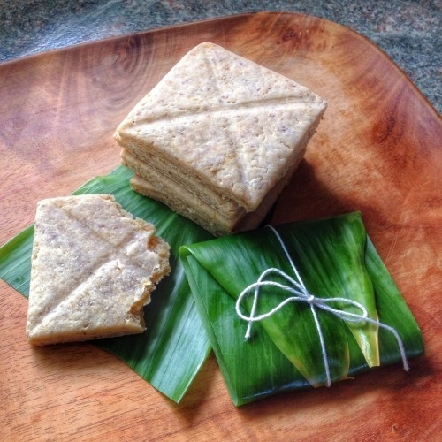

Lembas

What is Lembas?
Lembas, also known as Elven Bread is a tipical travel-food made by Elves, in Lord of The Rings. In Tolkien's work, the bread is described as a food suitable for long journeys, which remains fresh and nutritious for many days, retaining its sweetness.
"One will keep a traveler on his feet for a day of long labour, even if he be on of the tall Men of Minas Tirith" - The Fellowship of The Ring.
Ingredients
3 eggs
1 cup of honey
zest of 3 oranges
1 cup of almonds
4 tablespoons of melted butter
2 cups of self-rising wheat flour
1 cup of oats
sheets
Steps
- Turn the oven to medium heat so that it is heated when it is time to bake the lembas
- Blend the almonds in the blender
- In a cup or small bowl, place the eggs and mix with a fork until smooth
- Mix the dry ingredients in a bowl and stir until combined
- Make a hole in the middle and add the eggs, honey and butter
- Mix everything until you have a dough that resembles bread dough (it has to keep coming away from the container although it is still a little sticky)
- Roll out the dough on a floured surface
- Knead the dough with a rolling pin or with your hands until it is a finger thick
- With a large, sharp knife, cut into 4 x 4 finger squares
- Make an "X" pressure with the knife from one end of the square to the other
- Place on a tray lined with parchment paper or greased, with 2 fingers apart
- Take it to the oven for 20 minutes and do the toothpick test (insert the toothpick in one of the lembas; if it comes out clean it's good)
- Wrap the lembas in cabbage leaves or napkins and tie with string like a small package
There you have your elven bread!
Back to Top
Back to the Recipes